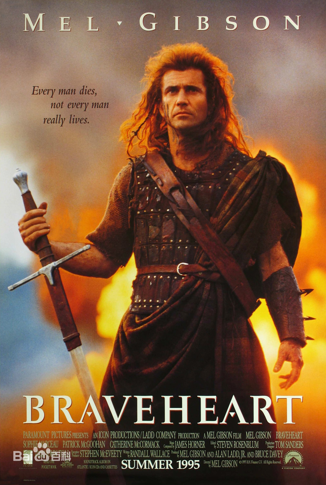
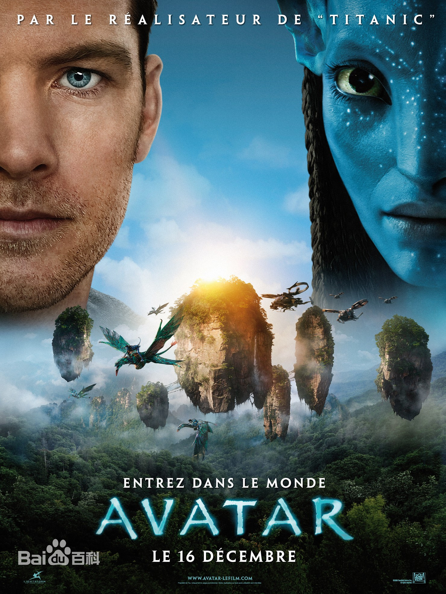
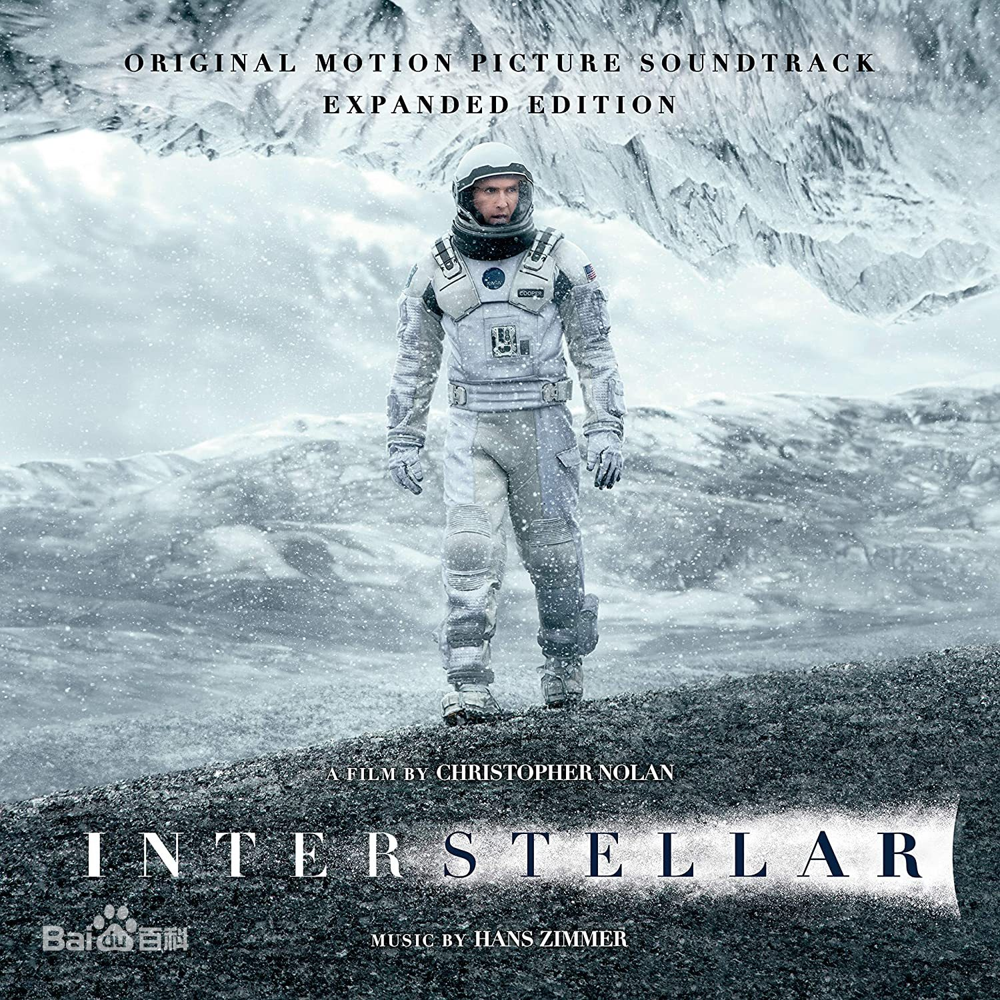

|
|

《勇敢的心》是由梅尔·吉布森执导，梅尔·吉布森、苏菲·玛索、凯瑟琳·麦克马克等主演。影片以13-14世纪英格兰的宫廷政治为背景，以战争为核心，讲述了苏格兰起义领袖威廉·华莱士与英格兰统治者不屈不挠斗争的故事。该片在第68届奥斯卡金像奖上获得最佳影片、最佳导演等5项奖项。

《阿凡达》是由二十世纪福克斯电影公司出品，詹姆斯·卡梅隆执导，萨姆·沃辛顿、佐伊·索尔达娜、西格妮·韦弗领衔主演的科幻电影。该片讲述了在未来，人类飞到遥远的星球潘多拉开采资源，受伤以后以轮椅代步的前海军杰克，自愿接受实验并以他的阿凡达来到潘多拉。然而，在结实了当地纳美族人公主涅提妮之后，杰克在一场人类与潘多拉居民的战争中陷入两难的故事。
《星际穿越》是2014年英美联合制作的科幻电影，由克里斯托弗·诺兰执导，马修·麦康纳、安妮·海瑟薇领衔主演。该片在物理学家基普·索恩的黑洞理论之上进行改编，主要讲述了一组宇航员通过穿越虫洞来为人类寻找新家园的冒险故事。该片获得了第87届奥斯卡金像奖的五项提名，并获得最佳视觉效果奖。
